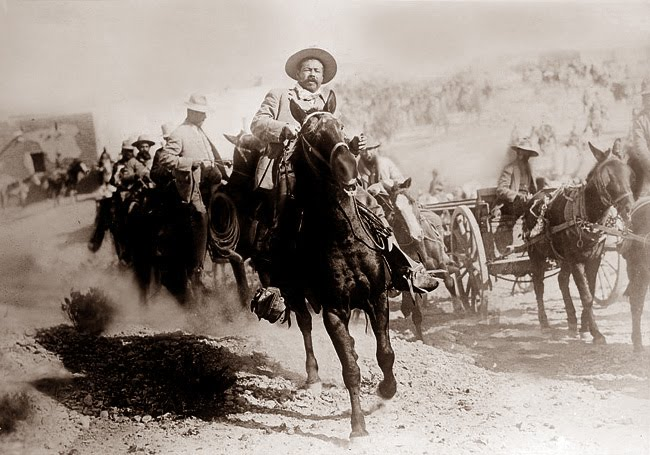
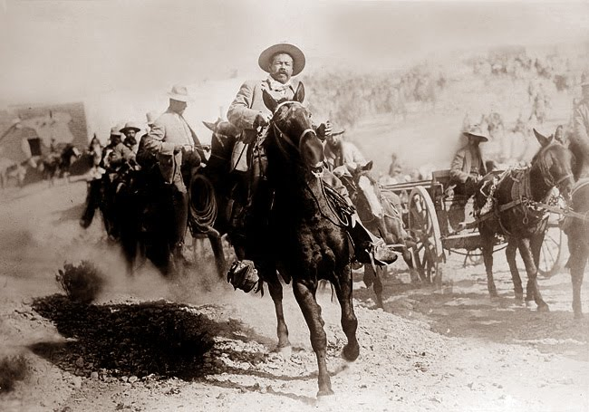
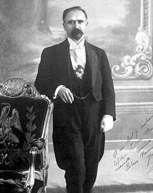
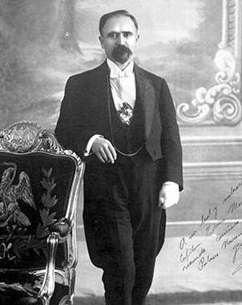

EMILIANO ZAPATA
Nació el 8 de agosto de 1879, en San Miguel de Anenecuilco, Morelos, en el seno de una familia campesina. Con una instrucción muy elemental, en marzo de 1911 se lanzó a la lucha revolucionaria con un grupo de campesinos, el cual fue creciendo en número hasta convertirse en un pequeño ejército, al mando de Pablo Torres Burgos.
Tras la toma de Tlaquiltenango y Jojutla, murió Torres Burgos y Zapata asumió la jefatura de la Revolución en el sur del país. Se apoderó de Yautepec, Cuautla y Cuernavaca y siguió en campaña contra las fuerzas federales, aún después de la caída del general Porfirio Díaz.
El presidente León de la Barra envió al Victoriano Huerta a combatirlo. Madero conversó con el Caudillo del Sur en agosto de 1911 para persuadirlo que licenciara sus tropas, con el compromiso de nombrar autoridades revolucionarias en el estado de Morelos. El gobierno federal, lejos de hacerlo, reiteró las órdenes de combatirlo para imponer la paz. Zapata, con sus fuerzas casi aniquiladas, se retiró a los límites con Guerrero, rehizo su ejército y, para octubre, amenazaba el Distrito Federal.
Zapata volvió a entrevistarse con Madero, siendo éste ya presidente de la República, pero sin llegar a ningún acuerdo. Zapata regresó a la guerrilla y, el 25 de noviembre de 1911, lanzó el Plan de Ayala, donde plasmó sus ideas agraristas. En mayo de 1913, al usurpar el poder Victoriano Huerta, Zapata lo declaró indigno de estar en la Presidencia y se exacerbó la persecución en su contra.
En 1914, formado el Ejército Libertador del Centro y del Sur, Zapata controlaba todo el estado de Morelos y había extendido su influencia a otras entidades. Derrotado Huerta, los carrancista cortaron el paso de los zapatistas hacia el Distrito Federal, cuando ya se encontraban en las inmediaciones de Milpa Alta. Carranza rechazó las pretensiones agrarias de Zapata y éste entró en contacto con Francisco Villa. Sus representantes en la Convención de Aguascalientes desconocieron al Primer Jefe, reiniciando las hostilidades.
En 1916, el gobierno de Carranza, ya instalado en la ciudad de México, organizó una poderosa ofensiva dirigida por el general Pablo González, quien en mayo recuperó casi todas las poblaciones que estaban en poder de los zapatistas; sin embargo, para fines de ese año, los constitucionalistas evacuaron el estado de Morelos, diezmados por el paludismo y las guerrillas. Así, los zapatistas pudieron recuperar algunas poblaciones a principios de 1917.
Entonces, Zapata expidió la Ley Administrativa General para el Estado. Se reinició la producción y se abrieron escuelas mientras en la periferia continuaba la actividad guerrillera. Una vez promulgada la Constitución y celebradas las elecciones, Carranza asumió la Presidencia de la República y se propuso acabar con el zapatismo. Para octubre de 1918, Zapata nuevamente era un fugitivo. En enero de 1919 publicó un manifiesto culpando a Carranza de todos los males que padecía el país.
El 10 de abril fue asesinado en Chinameca, por una escolta comandada por Jesús Guajardo, quien había simulado pasarse a sus filas.

 
 
